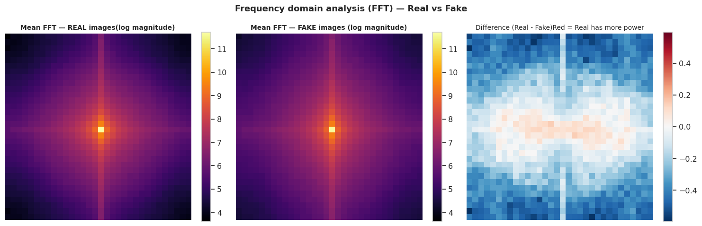

Forensic Fake Image Detection
Pipeline
An end-to-end computer vision pipeline explicitly designed for detecting AI-generated media (Stable Diffusion) via frequency-domain artifact analysis and EfficientNetB0 transfer learning.
Detecting Invisible Generative Artifacts
Visual inspection often fails against modern generative models like Stable Diffusion, especially at low resolutions. This pipeline utilizes forensic signals in the frequency and texture domains to identify synthetic media. Fast Fourier Transform (FFT) analysis revealed substantial radial power spectrum divergences at mid-high frequencies.

Forensic Reality: The core finding of this research demonstrates that forensic signals (like spectral signatures and LBP patterns) are statistically far more reliable for detection than semantic image content, which frequently tricks standard spatial classifiers.
Two-Phase EfficientNetB0 Training
A scratch-trained CNN baseline suffered from overfitting and limited recall. To resolve this, a pre-trained EfficientNetB0 model was implemented using a strict two-phase transfer learning methodology. This approach yielded a dramatic +17.1 percentage point improvement in recall over the baseline.
Training only the classification head to map the pre-learned generic feature space to the specific forensic detection objective, ensuring base representations are preserved.
Gradually unfreezing the final blocks of the EfficientNet architecture with a low learning rate. This allowed the model to specifically adapt its texture and spatial perception to generative artifact patterns without catastrophic forgetting.
Grad-CAM Interpretability
For content moderation applications, establishing trust is critical. Gradient-weighted Class Activation Mapping (Grad-CAM) was implemented to guarantee the model focuses on synthetic texture cues and boundaries rather than "cheating" by memorizing dataset biases (e.g. background scenes).

Explore the Insight Report
View the complete methodology and validation in the repository whitepaper.